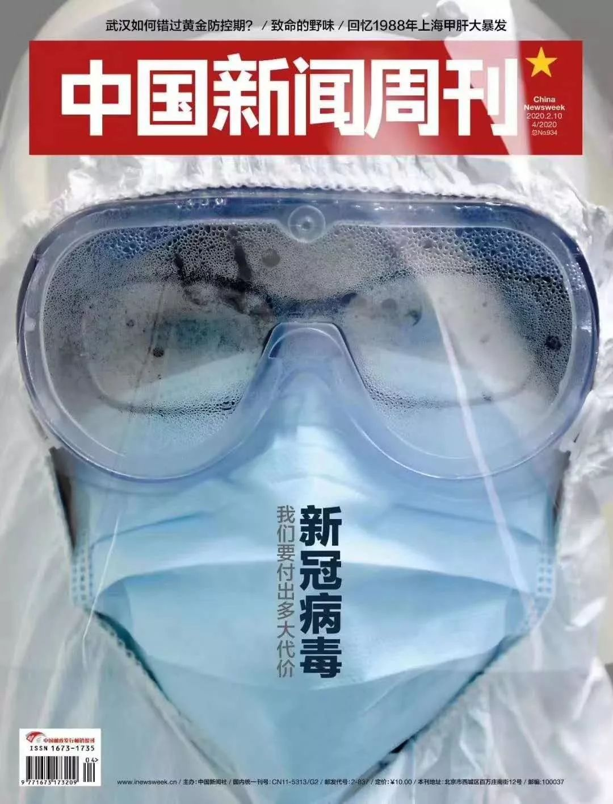
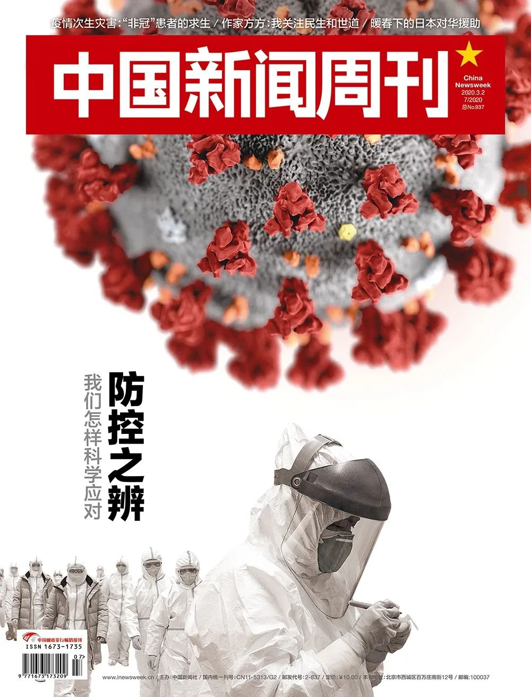

复盘疫情决策：医生、疾控、科研、行政分别做了什么_武汉
原文链接 备份链接 原标题：复盘疫情决策：医生、疾控、科研、行政分别做了什么 2月6日下午，一辆运送医疗设备和工作人员的车辆抵达武汉火神山医院。摄影/长江日报 陈卓 1月8日晚，作为中国疾病预防控制中心（CDC）首席流行病学家，曾光突然接 …
 “中国的措施是非同寻常且史无前例的”
“中国的措施是非同寻常且史无前例的”


费和平。图/受访者提供
“一而再地，我们都在恐慌和忽视中循环”
专访美国疾控中心前主任费和平
*本刊记者/彭丹妮*
*发于2020.3.2总第937期《中国新闻周刊》*
如果你打开美国疾病预防与控制中心（CDC）的官网，一眼就会看到网页正中那张粉红色的、看起来挺漂亮的新型冠状病毒的大照片，旁边的通栏标题写着：CDC正在密切监测着新冠病毒的爆发。
目前，武汉市及整个中国新冠病毒感染的流行病学曲线在达到峰值后，已经下降且趋于平稳。但病毒开始在多国蔓延，引发了全球关注。费和平（Tom Frieden）曾于2009～2017年间担任美国CDC主任，如今，他是一家总部位于美国的国际公共卫生机构卫健策略旗下“决心工程”的总裁兼首席执行官。
基于在美国CDC多年的工作经验，费和平在接受《中国新闻周刊》专访时表达了对中国疫情防控的看法。
中国新闻周刊：通常来说，来自疾控系统或者公共卫生领域的从业者在流行病应对中承担怎样的角色？
费和平：微生物世界总是不断有新的东西——科学家平均每年都会发现一种新的病原体。中国采取了非常有力的措施来遏制新冠病毒，为湖北以外的地区和世界各国赢得了准备的时间。
为了应对疫病暴发，最佳做法是让快速反应小组调查新的疾病威胁、利用强大的实验室来识别微生物，通过强大的疾病监测系统来跟踪新的感染，同时建立应急行动中心，来协调参与疫情应对的各方。
在任何疫情应对中，我们都会回顾总结，看看哪些地方可以做得更好。如果中国在SARS以后就彻底关闭活禽市场，就可能避免这次新冠疫情的爆发。此外，要想及时报告和调查潜在的异常事件，就需要临床医生和公共卫生工作者的密切合作，以及具备公共卫生调查能力的专业团队。
中国新闻周刊：在中国的防疫措施中，封城是最关键的决策之一。在此前的传染病全球大流行中，这样的措施有过先例吗？接下来在其他国家的疫情防控中，需要采取类似这样的措施吗？
费和平：中国的措施是非同寻常且史无前例的，这些措施可能给中国其他地方和世界其他国家争取更多的准备时间。目前，最重要的是关注对疫情的应对策略，确保世界各国都为可能出现的情况做好准备。
中国新闻周刊：从这次应对策略中我们能学习到什么经验，又有哪些可以改进的地方？
费和平：防疫工作既要勤勉，又要有深厚的专业知识。需要发现、调查、治疗和监测传染病病例，追踪和检查密切接触者，分析流行病学趋势，以确定预防战略。每个国家都需要有能力预防、发现和有效应对疾病暴发，而且国家越大，需要的资源就越多。
一而再地，我们都在恐慌和忽视中循环。当流行病来袭时，每个人都很担心；但当疾病消失，不再是新闻头条时，我们又忘记了为疾病预防和控制投资的必要性。在低收入环境中，提高国家发现、制止和预防流行病的能力，每人每年需要大约1美元。这相当于全球每年花费30到40亿美元，重点放在非洲和亚洲一些准备最不充分的地区。这对公共卫生来说是一大笔钱，但与这次疫情造成的损失相比，这不过是微不足道的一小部分。
值班编辑：冯超
封面报道之一
《新冠病毒——我们要付出多大代价》
（由5篇报道组成）
*点击下图，一键下单*

封面报道之二
《围城之战——我们如何过关》
（由6篇报道组成）
***点击下图，一键下单***

封面报道之三
《武汉攻坚——我们如何与疫情赛跑》
（由5篇报道组成）
*点击下图，一键下单*

封面报道之四
《防控之辨——我们怎样科学应对》
（由6篇报道组成）
*点击下图，一键下单*



原文链接 备份链接 原标题：复盘疫情决策：医生、疾控、科研、行政分别做了什么 2月6日下午，一辆运送医疗设备和工作人员的车辆抵达武汉火神山医院。摄影/长江日报 陈卓 1月8日晚，作为中国疾病预防控制中心（CDC）首席流行病学家，曾光突然接 …
原文链接 备份链接 【财新网】（记者 王婧）新冠肺炎疫情持续已近两月，中国疾控体系的短板暴露无遗。2月27日，在广州市新闻发布会上，国家卫健委高级别专家组组长钟南山称，各级疾控中心（CDC）了解疫情，却没有对外发布的权力，只能逐级上报。这 …
原文链接 备份链接 Original 黄祺 新民周刊 新民周刊 About Feature 深度和角度——这就是我们能做的。 Today 突如其来的新冠肺炎疫情给我们上了沉重一课。这次付出的代价也许难以估量。吃一堑, 长一智, 必须成为我 …
原文链接 备份链接 【财新网】2020年2月10日，外交部发言人耿爽主持网上例行记者会。 首先向大家通报一组数字：根据中国国家卫生健康委今天上午发布的统计数字，2月9日0-24时，中国境内新增治愈出院病例632例。 截至2月9日24 …
原文链接 备份链接 这是一种全新的病毒，还有很多未知。它代表了一种演进的公共卫生突发事件，我们还会在其他国家看到更多确诊病例。中国对传染病以及卫生突发事件的诊断、治疗和管理能力在过去20年得到了显著的提升。 文 |《财经》记者 江玮 发自 …